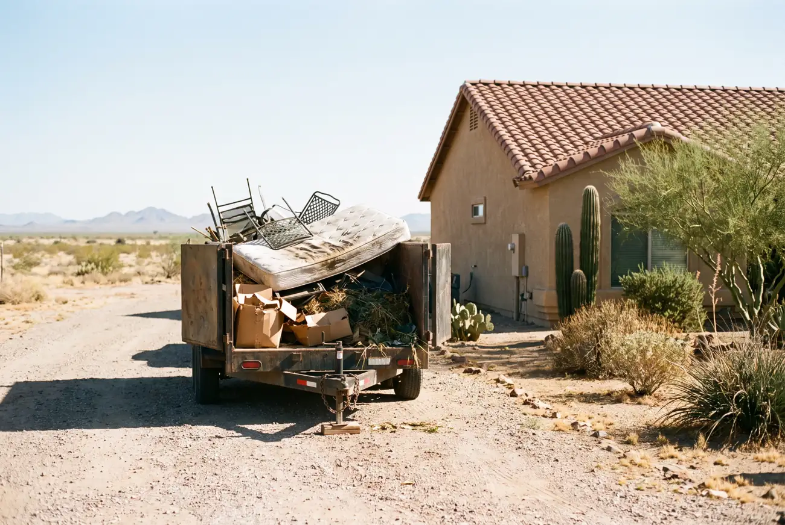

Yard waste and construction debris removal in Casa Grande covers the heavy, awkward material the City will not take as household bulk trash. Mesquite and palo verde limbs, palm fronds, ripped-out landscaping, fence panels, patio covers, old cabinets, carpet, tile, drywall and full shed teardowns. Dense loads that hit a weight limit long before they fill a trailer.

The crew arrives with a trailer sized to the job and loads by hand from wherever the material sits — a back yard, a side gate, a torn-out room. Limbs get cut down to manageable lengths on site so they pack tight instead of eating the whole trailer.
Shed teardowns are their own step. The structure comes apart in sections, fasteners and metal get separated for recycling, and the pad gets raked clear once the debris is loaded.
Green waste, scrap metal and construction material go to different destinations, so the load gets split at the back end rather than dumped in one place.
Monsoon season is the busy stretch. Storms move through Pinal County from roughly July into September, and one night of wind produces more debris than a bulk pickup will take in a single set-out.
Municipal uncontained trash programs are built for household bulk — furniture, mattresses, carpet, bagged clippings and tree limbs within size limits. Construction and demolition material goes through a different waste stream with different tipping fees, so it is excluded almost everywhere, Casa Grande included.
Weight is the other half of it. A trailer of drywall, tile or concrete can exceed a legal axle load while the trailer still looks half empty. That is why debris jobs are priced differently from a garage full of boxes taking up the same space.
Storm debris also tends to exceed set-out size limits. A single downed mesquite limb can be longer than what a bulk crew is allowed to grab, and it is not going to shrink while it sits in your yard.
| Job | Typical price |
|---|---|
| Small storm pile (limbs, fronds, one fence panel) | $180 – $290 |
| Half load of yard waste | $350 – $500 |
| Full load of remodel debris | $600 – $850 |
| Fence removal (per section, hauled) | $45 – $90 |
| Shed teardown and haul | $525 – $1,450 |
What raises it: weight, first and foremost — tile, concrete, wet drywall and dirt price higher per cubic yard than anything else we haul. No gate or driveway access. Material that needs cutting down before it can be loaded.
What lowers it: stacking the pile near the driveway before we arrive, and keeping green waste separate from construction material so the load does not need sorting on site.
Do it yourself when the pile fits one pickup bed, the material is light, and your bulk trash week lines up. A few bags of clippings and a couple of limbs is not worth paying for.
Call a crew when the material is dense, oversized or excluded from City pickup, or when you would need multiple trips. Landfill runs from Casa Grande cost you a tipping fee per visit plus fuel and most of a Saturday.
Shed teardowns and fence removal are the clearest case. Both involve tools, exposed fasteners and awkward lifting, and both produce more volume than people expect once the structure is flat on the ground.
Yes. Drywall, tile, cabinets, carpet, lumber and fencing are all standard debris removal jobs in Casa Grande. These materials are excluded from City uncontained trash pickup, which is why most calls for them come to us. Dense loads price by weight as well as volume.
Yes, and storm weeks are our busiest stretch. Downed limbs, blown fence panels and damaged patio covers are routine work from July through September in Casa Grande. Call (520) 569-2190 early in the week, because these windows fill fast.
Yes. Shed teardown and haul in Casa Grande runs roughly $525 to $1,450 depending on size, material and whether it is on a concrete pad. We take the structure apart in sections, separate metal for recycling, and rake the pad clear when the debris is loaded.
Yes, both wood and chain link. Fence removal is priced per section, generally $45 to $90 including haul-off. Posts set in concrete take longer and we will note that in the on-site quote before any work starts.
Free on-site estimate. Yard waste and construction debris hauled anywhere in Casa Grande and Pinal County.
Call (520) 569-2190 for a Free Estimate